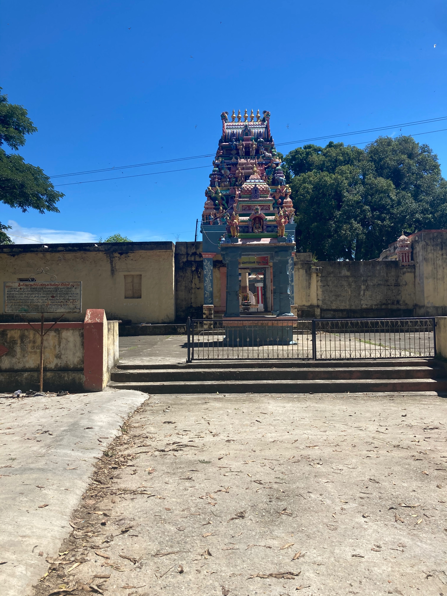

The Varieties of Silence
Last updated: Apr 25, 2022
I grew up in a quiet household and have always been sensitive to noise. Lately, this sensitivity has gotten much worse and I find myself complaining about it both online and to people in the real world.
I’m writing this because I figure celebrating silence might work as a palliative for this condition.
Like food or wine, silence not just a physical reality but a phenomenon of the mind. To me silence is really a proxy for solitude, contemplation, and a refuge from the anxiety of feeling like you might be called upon to Deal With Something.
Here are the varieties of silence as I experience them, dedicated to my fellow connoisseurs.
The Absolute
The Desert
The Canyon
The silence of the canyon is cozy. If you’re walking inside a narrow, twisty canyon it’s like being in a room with impossibly high walls that shield you from the sound of cars in the distance or other people.
The Ocean Cliff
The ocean is not quiet, but its silence is lonely. Standing on a cliff in San Francisco and looking over the Pacific ocean at night you have to wonder: what happens if you take a sailboat and go further west? What beasts lurk under water in the open ocean and what beasts might you see inside your own mind?
The Dense Forest
A forest has lots of sounds, but I believe our ape-brain finds it to be the most familiar setting. You’re still more alert than you’d be in a dead desert, but the rustling of leaves underfoot or the sound of insects and birds never spikes your heart rate the way a lawnmower or an ambulance siren does.
The Museum
A fine art museum bombards your brain with so much visual beauty that it tricks you into ignoring most of the sounds. The presence of all that beauty makes you walk a little slower, maybe breathe a little slower, and along with it comes a stillness.
The Academic
The academic silence can be found on the campuses of great universities, but its purest expression is in the libraries, such as the Library of Congress. In the battle against noise the librarians are the cavalry, the fanatics, the shock troops — and may the gods bless them.
The Religious
All famous temples are insanely noisy, but a small village temple can still be peaceful. The silence there I suppose is the weight of history, not just in the myths carved on the walls but the peculiar smoothness of the stones of the steps and thresholds, polished by so many feet walking on them for decades. Strangely I also felt that sort of silence at an American temple, the Lincoln Memorial, even with lots of tourists around me, because the weight of the words carved into the marble drowned out all the noise.

The Hotel Room
The silence of the hotel room has anonymity. Nice hotels have excellent soundproofing and will honor the ‘do not disturb’ sign on the door. No one knows you’re there and except for overly helpful staff no one’s going to knock on the door and disturb you.
The Exam
This is a nasty, foul silence. Of all the ones in this list, this is the only one you wish would be broken by noise as soon as possible. Whether you know the answers or not, this silence only produces urgency, anxiety, furtive glances at the watch.
The Road Trip
This silence is found somewhere around the seven-hour mark on a solo road trip through the American West. You’ve gotten sick of listening to podcasts, music, and audiobooks and there is nothing but enforced mindfulness. There is no past or future at this point in the road trip. The motel you left hours ago doesn’t matter, and home is still many hours away. There is nothing to do but listen to the steady sound of tires against asphalt and keep your hands on the wheel.
The Artificial Silences
I suppose I should include these as honorable mentions. Whether it’s noise-canceling headphones or earplugs, the artificial silence is better than nothing but ultimately unsatisfying, much like getting drunk to suppress your sadness or drinking coffee to stay up. The real demons are still out there, just waiting for a crack in the door.